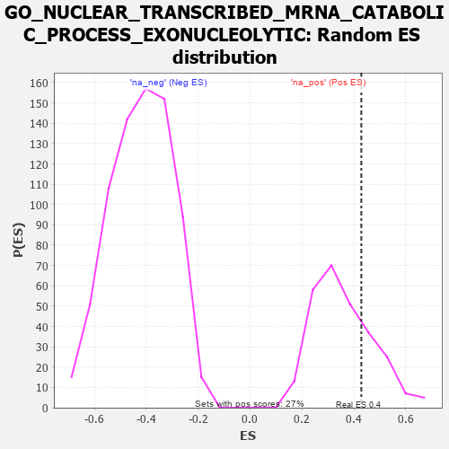

| | | Dataset | 7d |
| Phenotype | NoPhenotypeAvailable |
| Upregulated in class | na_pos |
| GeneSet | GO_NUCLEAR_TRANSCRIBED_MRNA_CATABOLIC_PROCESS_EXONUCLEOLYTIC |
| Enrichment Score (ES) | 0.42862982 |
| Normalized Enrichment Score (NES) | 1.1929157 |
| Nominal p-value | 0.2556391 |
| FDR q-value | 0.4808701 |
| FWER p-Value | 1.0 |
Table: GSEA Results Summary
 Fig 1: Enrichment plot: GO_NUCLEAR_TRANSCRIBED_MRNA_CATABOLIC_PROCESS_EXONUCLEOLYTIC
Fig 1: Enrichment plot: GO_NUCLEAR_TRANSCRIBED_MRNA_CATABOLIC_PROCESS_EXONUCLEOLYTIC
Profile of the Running ES Score & Positions of GeneSet Members on the Rank Ordered List
| PROBE | GENE SYMBOL | GENE_TITLE | RANK IN GENE LIST | RANK METRIC SCORE | RUNNING ES | CORE ENRICHMENT | | 1 | CNOT7 | | | 348 | 0.750 | 0.0532 | Yes |
| 2 | CNOT6 | | | 462 | 0.655 | 0.1236 | Yes |
| 3 | WDR61 | | | 734 | 0.549 | 0.1605 | Yes |
| 4 | EDC4 | | | 957 | 0.494 | 0.1964 | Yes |
| 5 | LSM4 | | | 1426 | 0.405 | 0.1899 | Yes |
| 6 | LSM6 | | | 1444 | 0.402 | 0.2397 | Yes |
| 7 | HBS1L | | | 1454 | 0.399 | 0.2901 | Yes |
| 8 | LSM7 | | | 1754 | 0.344 | 0.2970 | Yes |
| 9 | LSM2 | | | 1829 | 0.332 | 0.3307 | Yes |
| 10 | DCP1A | | | 1877 | 0.323 | 0.3665 | Yes |
| 11 | DDX6 | | | 1915 | 0.318 | 0.4030 | Yes |
| 12 | LSM1 | | | 2098 | 0.291 | 0.4177 | Yes |
| 13 | LSM3 | | | 2282 | 0.263 | 0.4286 | Yes |
| 14 | PATL1 | | | 2610 | 0.210 | 0.4147 | No |
| 15 | DCPS | | | 2873 | 0.170 | 0.4038 | No |
| 16 | DCP2 | | | 7724 | -1.833 | 0.0310 | No |
Table: GSEA details [plain text format]

Fig 2: GO_NUCLEAR_TRANSCRIBED_MRNA_CATABOLIC_PROCESS_EXONUCLEOLYTIC: Random ES distribution
Gene set null distribution of ES for GO_NUCLEAR_TRANSCRIBED_MRNA_CATABOLIC_PROCESS_EXONUCLEOLYTIC